|
Joe Was Here |
||||
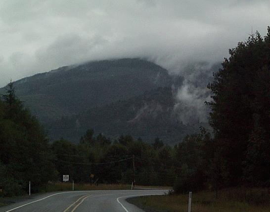 Clouds hung low on the road toward Mt. Baker. 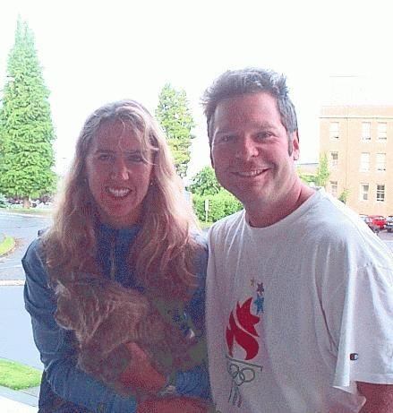 Cathy, Kona, and Brian 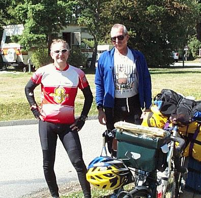 Dan & I at Bayview State Park in Washington. 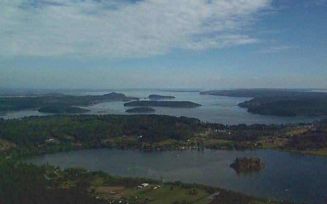 The view from the top of Mt. Erie which is on Anacortes. This steep climb provided the perfect end to a perfect tour. 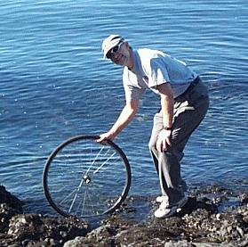 The tire is dipped into ocean inlet waters. 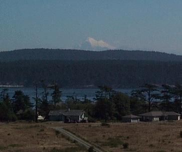 You can see a snow covered Mt. Baker from San Juan Island where Pat and I spent a few days at the end of my tour. |
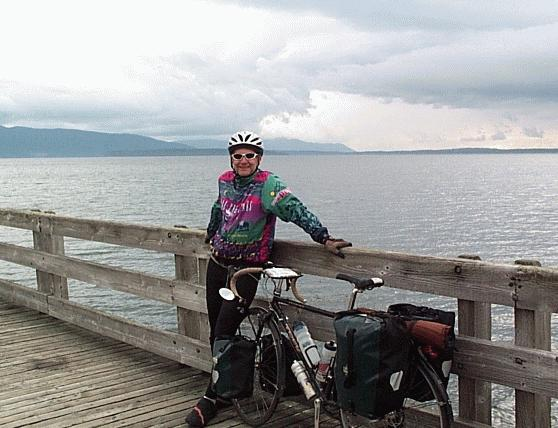 Bellingham Bay and the Pacific Ocean beyond. . . 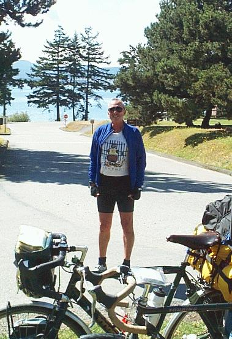 Dan has been on the road since May 6th. He's crossed Canada and is now on his way to San Diego. 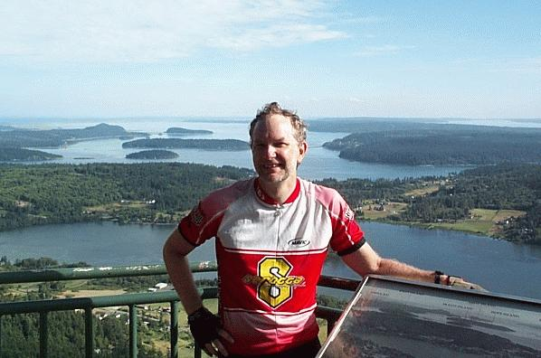 The top of Mt. Erie. 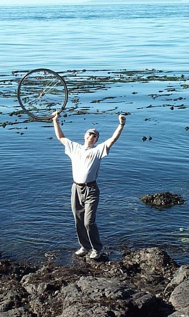 It feels good to have met my goals. 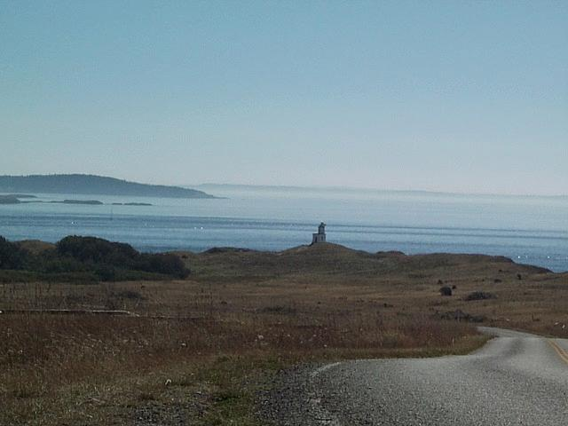 The south end of San Juan Island (also below). 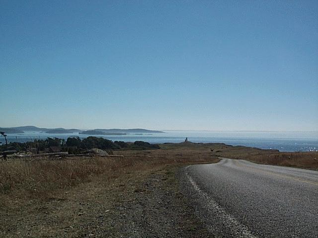 |
I can't believe it. I biked 3063 miles in seven
weeks. Along the way I took time to see the sights and make new
friends. There was almost a complete lack of difficulty. I
did not get sick. My bike did not break. I had only three
flat tires and a wheel that needed to be trued. In seven weeks, I
biked in rain only twice. I did have some saddle sores and at one
point I did get weary of discourteous traffic.
Having arrived in Bellingham after cycling the penultimate day of the trip, it was hard for me to conceive of the fact that I had pedaled a bicycle from my home in Madison, Wisconsin to the west coast. My hosts for the night Cathy, Kona (the cat), and Brian were probably tired of hearing me tell them that they live on the west coast. Especially since Bellingham Bay, which empties into the Pacific, can be seen from their front porch. One can't help but be affected by the people and the places of the
plains and the west. Even now, after a week at home, I feel as though if I
were able to close my eyes tight enough that I could reach out and touch the
great plains where dramatic skies roll over the Niobrara River
valley and the Whippoorwills sing their haunting song. I could feel
the coarse dryness of the high plains covered in sage and grass and with
my hand follow these plains to where they crash up against the Wind
River Mountain Range exposing layers of deep red rock. I
could feel the rock and ice of the Rocky Mountains as if they were a
steady hand working the land below. I could delight in the cold water hurrying down the
mountain giving life to forests of pine, herds of deer, elk,
and solitary bears. If I could only close my eyes tight enough,
perhaps I
could reach out and touch a continent. It must be so because I was
there and this land is with me. |
||
|
Thanks to my father, Joe and my wife, Pat, who were always there when I needed them. This trip would not have been possible without their support. Thanks to my "Rockies" buddies who escorted me out on my first day. Thanks to all the friends who followed my trip with interest and provided encouragement along the way. Thanks also to all of the friendly people I met along the way. Thanks to Ryan who allowed me to camp where overnight camping is not normally allowed. Thanks to the retired railroad workers in Iowa who tried to tell me that my map was flawed (too bad I didn't pick up on it). Thanks to Carmen, Tom, and Chris at the Storm Lake Chamber of Commerce for making me feel so welcome (even though there is no coffee shop on the lake's shore). Thanks to Leigh and Andrea for the good company in camp. Thanks to Griff, Mark, Nora, and Zoe for their enthusiastic cycling above the Lewis River Canyon near Yellowstone and company in camp in Ennis. Thanks to Ariane and Daniel who showed me how to make the most out of Ramen noodles. Thanks to Steve for the day of hiking in Waterton. Thanks to Goldie for a good night's sleep and the first and only omelet to defeat my ample appetite. Thanks to the flag person that gave me a head start (and the road to myself) heading down from the Salmo/Creston Pass. Thanks to cyclists like Bill, Dick, and Dan who were quick to share route advice and perspectives on life. Thanks to the all the people on motorcycles, in cars, and campers who kindly shared their evening and stories of their own. Thanks to Cathy, Kona, and Brian who took me in for a night and treated me so well, I almost didn't leave. Thanks to all the cyclists I met along the way, many I've mentioned or have pictured on these pages. Those and the others, like the group of four I cycled with out of Grand Forks, I think of often. Did you complete your journey? Would you do it again? What would you change? My answers would be: Yes, yes, and next time Pat's coming with me. -joe
|
||||
| Pat tracked my progress with push pins and a map. Each pin represents an over night, green is for motels, yellow is for camping and red represents more than one day in one spot (15 of 48 nights were spent camping). It might look like I didn't take many days off but I rested on a few days by biking 40 miles or less. | ||||
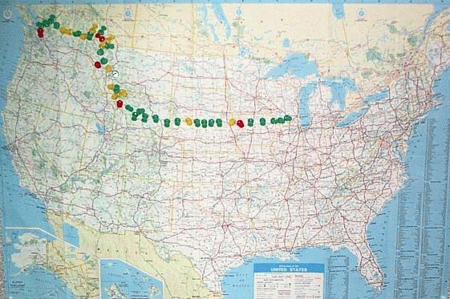 |
||||
| There's something about this map that draws the eye to the east. I wonder what that could be? . . . | ||||
{kind=link}
{kind=link}
{kind=link}
{kind=link}
{kind=link}
{kind=link}
{kind=link}
{kind=link}
{kind=link}
{kind=link}
{kind=link}
{kind=link}